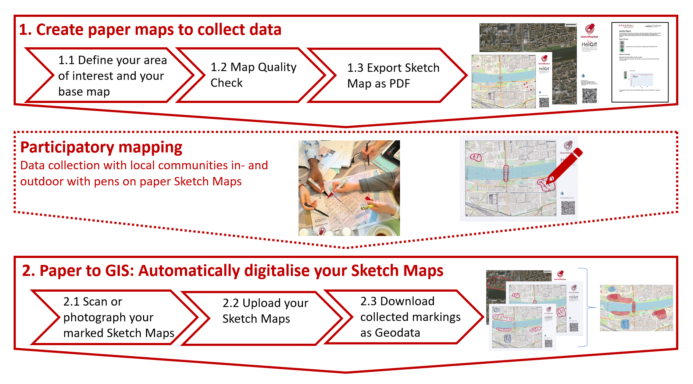
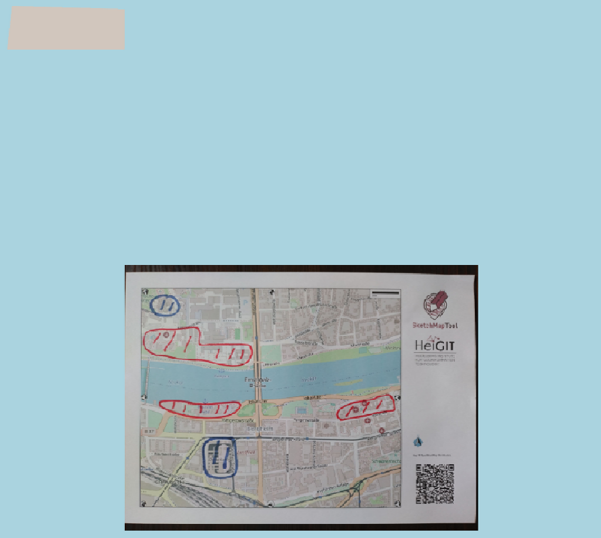
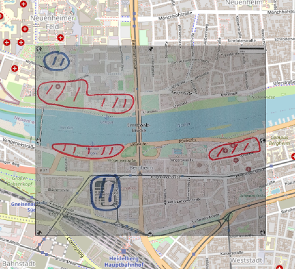

Sketch Map Tool Exercise 1 - Workflow Exercise#
Explore the whole workflow of mapping with the Sketch Map Tool, from first ideas about what you like to map to the possible digital results.
Characteristics of the exercise#
Aim of this exercise:
Get familiar with the Sketch Map Tool and its whole workflow from map creation to the results.
Type of trainings exercise:
This exercise can be used in online and presence training and is focused on an hands-on experience with the Sketch Map Tool.
Focus group (GIS-Knowlege Level)
planners/facilitators, as well as practitioners involved in the preparation of the field campaign or collecting the data
GIS Beginners-level: no specific knowledge about QGIS/uMAP required
Phase of participatory /community mapping
preparing participatory mapping / facilitating participatory mapping/ analysing participatory mapping
Estimated time demand for the exercise.
Between 2 and 2,5 hours (depending on number of groups).
Tip
To shorten the time, you can also just focus on the hands-on-exploration of specific parts of the workflow. You can, for example, work with pre-marked maps to focus on the second half of the workflow, or just focus on the first parts and show the final parts with prepared examples by sharing your screen.
Instructions for the trainers#
Trainers Corner
Prepare the training
Online access and devices (PC) to be able to use the Sketch Map Tool to create maps online, upload and download them.
Possibility to print the maps, smart phones to take the photos, and the possibility to upload the pictures to the Sketch Map Tool.
Take the time to familiarise yourself with the provided material for the exercise and the Sketch Map Tool in general.
Prepare a board (it can be a white board /flipchart / or digital e.g. mirro-board) where the participants can add their findings and questions.
Check out How to do trainings? for some general tips on training conduction
Conduct the training:
Introduction:
Introduce the idea, the aim, and the general workflow of the Sketch Map Tool before starting the exercise.
Provide access to the needed material and form groups (at least 3 people each to discuss together; ideal group size is 3 to 6 participants).
Time for group work:
Check-in with the groups and ask if there are questions or problems.
Prepare the presentation tool for the Wrap-Up.
Wrap up:
All groups present their findings (each 5 min, make it short but show the maps they are talking about).
Discuss the benefits, as well as challenges and problems in the use of the Sketch Map Tool
Leave some time to for Open questions.
What you need to know - background information#
Basic functionalities of the SMT#
The Sketch Map Tool is a easy-to-use tool for participatory mapping. It involves the offline collection of data, and the digitisation and georeferencing of the collected local data. The low-tech solution is designed to simplify the collection and analysis of local spatial knowledge and perceptions through the use of pens and paper maps: the so-called “Sketch Maps”. The Sketch Map Tool is an open-source web application. It facilitates the creation, usage and the digitisation and analysis of paper-based maps with OpenStreetMap or satellite data.
{kind=link}

SKetch Map Tool workflow#
The first step is the creation of the paper-based maps. Participants can choose between basemaps containing OpenStreetMap (OSM) data or basemaps containing satellite images. In addition, the tool can evaluate how well-suited an area of the OpenStreetMap (OSM) basemap is for participatory mapping. This evaluation is based on a quality analysis of the OpenStreetMap (OSM) data using the HeiGIT ohsome quality analyst.
Usually, the data is collected on site and offline through participatory mapping. For this, you only need participants, printed Sketch Maps and pens to draw markings on the Sketch Maps.
After mapping, the Sketch Map Tool supports the digitisation of the Sketch Maps. Upon uploading the pictures or scans of the marked Sketch Maps, the Sketch Map Tool initiates an automatic georefferencing and colour-detection process. The tool uses a combination of computer vision algorithms and novel AI models to extract Sketch Maps from photos and detect markings on them. The results can be downloaded in various geodata formats. The results can then be used for further analysis in Geographic Information System software (such as QGIS).
What does ‘georeferenced’ mean?#
A non-georeferenced image |
A georeferenced image – GeoTIFF |
|---|---|
Just an image, even if you load it in QGis and give it a coordination system it can´t be located and the image is shown somewhere in the Atlantic. |
The file contains information about its coordinate system and its location, so you can combine it other geodata e.g. with GPS data. |
 |
 |
Background Information on UMAP and QGIS in comparison#
UMAP is an online platform that allows users to create custom maps with OpenStreetMap (OSM) as a basemap layer. No installation or registration is necessary to use the platform. This enables users to quickly gain an intuitive overview of their data. Users can customize the appearance of the map and share it with others. It’s particularly useful for collaborative mapping projects, quick visualization of geographic data, and creating custom maps tailored to specific needs.
Feature |
QGIS |
uMap |
|---|---|---|
Type |
Desktop Geographic Information System (GIS) software |
Online mapping platform |
Accessibility |
Requires installation on a desktop computer |
Accessible online via web browser |
Purpose |
Comprehensive GIS software for spatial data analysis |
Interactive mapping tool for creating custom maps |
Data Import |
Supports various data formats (shapefiles, geodatabases, raster data, etc.) |
Vector data only, user input via map canvas, some geodata formats (geojson, .gpx, .kml, .osm) |
Data Visualisation and Analysis |
Offers extensive visualisation and analysis capabilities; Provides a wide range of geospatial analysis tools |
Focuses on the creation of interactive maps with custom elements; No analysis tools |
Output |
Printable map with all necesary map elements |
URL to share map online |
Hint
You can prepare your own case description fitting to your use cases for the Sketch Map Tool.
Step-by step introduction for participants#
If you experience any problems during your use of the Sketch Map Tool please take a look at the help page.
1. Start discussion#
Prepare and discuss in your group.
Take a look at information about your case-study. The images included might give you an idea of how the community might look like.
What would do you want to map? Which data do you want to collect? You can decide if you want to map hazards (e.g. the flood extent), vulnerablities (e.g. poor infrastructure) or capacities.
Scroll through the help-page of the Sketch Map Tool
Tip
The Geojson output of the Sketch Map Tool cannot be opened and inspected with commonly available tools. If you use the Sketch Map Tool and do not have QGIS installed but quickly want to examine your result, UMAP is a simple and quick way to do so. But be aware as it is an online platform, an internet connection is required.
2. Create a map in the Sketch Map Tool#
Open the Sketch Map Tool
Zoom in and select your map area. Try different zoom levels and change the orientation.
Create a map in an A4-size (in future cases, you can choose other Sketch Map sizes).
Tip
To shorten the time, you can work with prepared maps (case-maps). You can even skip the marking and work with images of already marked Sketch Maps to explore only the digitalising of the marked maps.
3. Mapping#
Discuss in your group what and how you would like to map. Decide if you focus on larger areas, on streets (or lines), or particular objects, so your mapping is similar and the results can be compared. Please take a look at our help page for tips on mapping.
Try to identify realistic places for what ever you want to map. Alternatively, just mark the map with different shapes in different sizes and colours to explore how the digitisation will look like.
Tip
Print your maps and mark with real pens to experience the real use of the Sketch Map Tool. Or, if it is not possible, use alternatives with pre-printed maps or digital markings. Take a look at the mapping tips on the help page.
4. Digitise#
Take a photo of your map. Please take a look at our help page for tips on how to take the picutre.
Upload the photo or scan to the Sketch Map Tool.
Download the results to the Sketch Map Tool.
5. Open your results in QGIS or uMap#
You can choose to use either QGIS (Option A) or uMap (Option B) for the next part of the exercise.
Tip
If you like to learn more about the visualisation and one possible analysis of the Sketch Maps explore exercise 4 and 5.
Option A: Open your results in QGIS
A: Open your results in QGIS
Open QGIS
Open QGIS and navigate to
Project->Newand click onSave. Navigate to the folder where you want to save your project, give it a name and clickSaveagain. When working in QGIS always remember to save your project every now and then.Add a Basemap
For a better overview and orientation, it is always helpful to add a basemap to your project and put your situation in a spatial context. Navigate to the browser
BrowserPanel >XYZ Tiles, and open the dropdown by clicking on it. Next, select OpenStreetMap or another basemap.Click here for more information on basemaps and how toa dd them to your project.
Load your results in QGIS
First, unzip the folder you downloaded from the Sketch Map Tool website. In it, you will find a vector file (
geojson) and a raster file (geotiff,tiff, ortif).Load both files into QGIS by dragging them onto QGIS. Be aware which files are at the top, because you might not be able to see the layers which are below. If it is your first time using QGIS, take your time to familiarise yourself with the QGIS interface.
Take a look at the detected markings, compare it with your map. Which differences can you see? Are some markings missing in the Sketch Map Tool results?
Option B: Open your results in uMAP
B: Open your results in uMap
Open the browser of your choice, navigate to the uMap Website and click on the large green button:
Create a map.Right above your map canvas, you can click in “
Untitled map” to edit your map properties. Give your map a title and a short description.

Editing the map properties#
You can load your data into the map frame by clicking on the upwards-arrow button
 in the toolbar on the right side of the website. The
in the toolbar on the right side of the website. The Import datapanel will open on the right hand side. Click onSelect fileand navigate to your vector output from the SKetch Map Tool (“Schuld_Ahr-tal_sketch-map_Ex4.geojson”) and click onOpen. uMap will automatically detect that your file is a geojson/vector file . Click onImportto load your data to your map canvas.Click in the upper right corner on
Save. If you are not logged in, you will be provided with an URL where you can access your map any time in the future. Save it somewhere or send it to your email.

UMAP interface with the Sketch Map vectors#
Note
Generally, you can create maps, edit them, and share them with others on uMap without signing up for an account. Signing up ensures persistent access to your created maps allowing to manage and edit maps over time. Without an account, the maps you create are stored temporarily in your browser’s local storage or session storage.
6. Wrap-up: What are your experiences with the Sketch Map Tool? - Discuss:#
Take notes and prepare a short presentation about your map area, the markings, and how the results look like at the end. Bring them back in the big group to wrap the exercise together.
Did you discover any problems or challenges during this exercise?
What is the greatest benefit of the Sketch Map Tool from your perspective?
Are their any open questions?